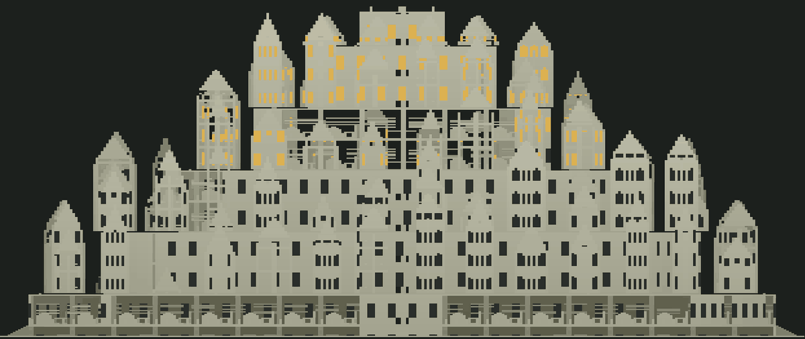

主要项目 · 开发中
HiveLab 合屋
本机多成员 AI 桌面工作台。把 Claude Code、Codex、DeepSeek 等编程助手请进同一个窗口：讨论过程公开可见，任务审批、文件差异和成果验收都在一处完成，每位成员用各自的原生执行端和独立登录工作。
- 界面、Electron 主进程、后台执行服务三进程分工
- SQLite 保存业务数据和事件流
- 单元、集成、界面和桌面冒烟测试
基于开源项目 offAice 持续开发，源码整理中，暂未公开。
香港中文大学（深圳）· CSE 本科生
正在开发 HiveLab 合屋
主要项目 · 开发中
本机多成员 AI 桌面工作台。把 Claude Code、Codex、DeepSeek 等编程助手请进同一个窗口：讨论过程公开可见，任务审批、文件差异和成果验收都在一处完成，每位成员用各自的原生执行端和独立登录工作。
基于开源项目 offAice 持续开发，源码整理中，暂未公开。
Minecraft 模组 · 非官方同人原型
Minecraft × 战锤 40,000 生存模组技术样机，目前是 v0.9。招募三种兵种，多选指挥、单兵配装；沿荒原土路走进程序化生成的分层巢都，贿赂或击败守卫，从底巢一路往上走。还没有剧情任务系统。

ECE3280 四人小组课程项目
我们搭建了一个可配置的基准框架，用 1 万名模拟玩家和 50 万场 1v1 对局，比较 Random、Elo、MMR 和我们提出的 MMRv2 四种机制。
A Benchmark Framework for Skill Rating Mechanisms in Competitive Games
Fu Yile, Xu Haimin, Zhao Wenbo, Yan Zheng ·
小组公开仓库
赛后更新公式几乎相同，只改匹配方式，Elo 的健康玩家占比就比 Random 高 55.4 个百分点。
MMRv2 的健康玩家最多，达到 89.25%，但收敛也最慢，要 22.2 万场。
四种机制最终的 Spearman 都在 0.93 到 0.96 之间，差别主要落在玩家体验上。